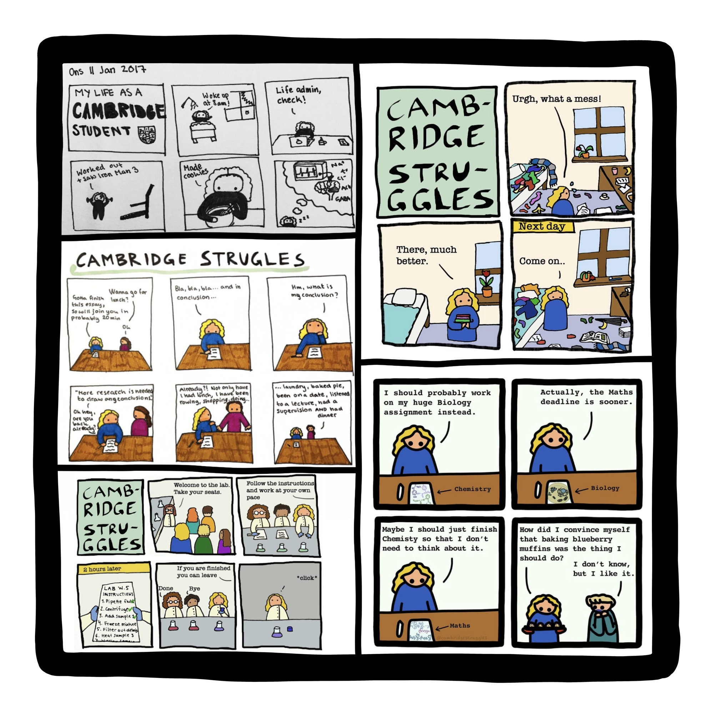
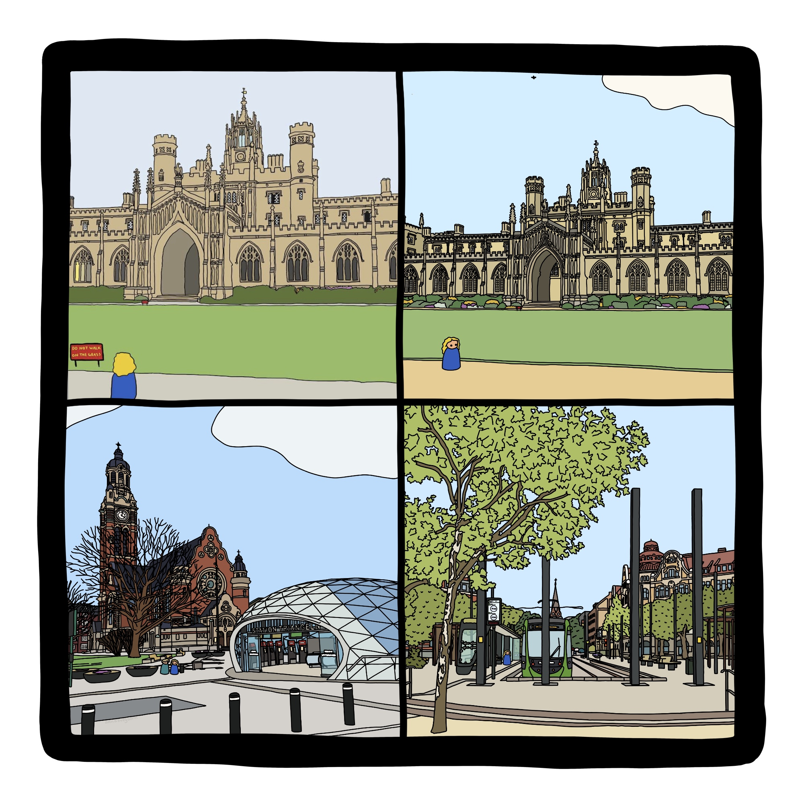

Hi!
I'm Anna. I'm here to tell you the story behind my alter-ego Strugle and her world Strugletown.
THE DIARY
Strugle first appeared in 2017 on a diary page. At the time I was studying at the University of Cambridge and was about to
break in my brand new Paperblanks diary
that I had been gifted as a Christmas present. As I was writing about my day I found myself describing all
the small problems we face as students. The next day I wrote about studying and having the same problems, for example,
spending too much time procrastinating. One day I found that I was about to write about these small Cambridge
struggles yet again and decided to draw them instead of writing about them.
COMICS
Soon I had drawn about two or three typical student struggles. I showed my friends who recognised the struggles and found them funny.
I decided to put the drawings on Instagram for them to follow. All the comics featured the little character Strugle with blue clothes
and yellow hair. She got her name from a
misspelling of Cambridge Struggles in one of the comics where one 'g' had been left out. We laughed about the mistake
and started referring to the character in the comics as Strugle.
The account @cambridgestruggles was created! The struggles
that I had as a student could be turned into something positive by turning them into comics which people relate to.
As more people found the account I started getting positive comments saying that they were happy to see that they
were not alone struggling as students. The community that was forming inspired me to do more.

CAMBRIDGE COLLEGES
Studying in Cambridge was tough, but one thing that always made it better was the beautiful surroundings that I
found myself in when going back and forth between lecture halls and libraries. Cambridge
is a beautiful city with stunning arcitecture. I decided to try to draw one of
the castle-like buildings in the same style as the comics and found that it was appreciated by the few followers that
my Instagram account had gained. Shortly thereafter my goal was to draw one building from each of the 31 Cambridge colleges.
This was a time consuming but fun challenge that I finished in January 2021!
MALMO & LUND, SWEDEN
After three years in Cambridge, I moved back to Sweden to continue my studies there. Continuing with the comics about
the struggles of being a student felt natural as there was plenty of inspiration to be found at Lund University too.
I decided to expand the drawings beyond Cambridge and start drawing Malmö (where I now lived) and Lund
(where I now studied) too.
Since these drawings didn't fit the Cambridge theme of the first Instagram account I decided to post these on a new
account called @strugletown, referring to any place where Strugle might be.

STRUGLETOWN.COM
It became clear that Strugle needed a website where everything Strugle related could be found. Shortly
thereafter strugle.com was created and here you are now! I have many creative ideas that I want to explore and I
hope that you'll be interested in following what happens here. If you already have a Strugletown product I recommend
you head over to the Bonus Content section where you can try stuff like AR filters and more. If you do not, I can recommend
heading over to the Shops section where you can get anything from posters and stickers
to tote bags and colouring pages.